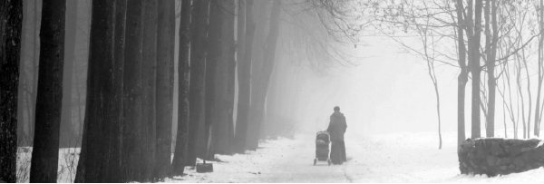

The Kidnapped Baby
The mysterious testament that shocked the family and removed the shroud of mystery from the family secret that had been kept hidden for seventy years. * Avrohom Rainitz reports on the shocking story which involved a Chassidishe family from Crown Heights and Nachalat Har Chabad, the wife of a senior member of the Russian army, and shluchim in Moscow. * The kidnapping: “Forget about your daughter; you’ll never see her again!” The search: Ads in the paper about the kidnapped baby. Silence: The story was a dark secret that was never even hinted at. The will: “Look for Nechama … find my little sister.” * Beis Moshiach reveals, for the first time, the stirring saga of the unknown fate of a baby born nearly seventy years ago to a Lubavitcher family. She had no idea that she was Jewish until a recent, moving encounter.

I became aware of this chilling tale during a Chassidishe farbrengen that took place in 770. In order to confirm that all the details were accurate, I checked out the story with some relatives of the family and those who were involved. At the family’s request, I am not publicizing their full name.
While researching the background of the story, some interesting information came to light about the protagonists involved in the gripping saga of the Z family. The Z family was Lubavitch in the time of the Rebbe Rashab. They lived in a small village near Vitebsk in White Russia.
One of the central figures in the story is the youngest son of the family, R’ Manis, who married Basya, from a Chassidishe family in Nevel. R’ Manis’ father sold candles. Family tradition has it that a gentile neighbor, who was jealous of the Chassid’s success, also opened a candle business. He was able to obtain candles at even lower prices and many customers switched to him. The Chassid’s livelihood was in danger of going under.
He went to Lubavitch and told the Rebbe Rashab about his plight. The Rebbe told him to light a black candle in his house. Not a week passed from when he returned home and lit the black candle when the news spread that the gentile neighbor had died suddenly.
ESCAPE TO SIBERIA
Our story begins in the summer of 1941. R’ Manis entered his home in a fright and told his wife Basya the news he had just heard. The cursed Germans, who in the past two years had conquered one European country after another, had surprised the Soviet army and were set on conquering the Soviet Union. This was a complete surprise because two years earlier, Russia and Germany had signed the Ribbentrop-Molotov non-aggression pact. Stalin, who believed the Germans, did not train his army properly and the German army sailed through Russia with barely any opposition.
The news they heard in the days that followed intensified their fears. They lived on the route that the Germans were likely to take and when they heard on the radio about the atrocities committed against the Jews, they realized they had to flee deep into Russia, as far as possible from the front. On the radio, the government encouraged civilians to board trains heading for Siberia or Central Asia.
The decision to leave wasn’t simple. It would be hard for anyone to leave their home on such short notice and begin a trip into the unknown; it was that much harder because Basya had not yet recovered from giving birth to her baby Nechama, one month prior.
But the reports continued to come in from the front, and the eyewitness accounts about mass murders the Germans were perpetrating in Jewish communities tipped the scale. They packed the most vital belongings and boarded a train heading for Siberia.
The trip wasn’t easy. The German air force bombed the train tracks repeatedly and the train had to travel at an infuriatingly slow pace. It often stopped for several days until the bombed out tracks were repaired.
The trip which, in the best of times, took weeks, was a nightmare of months. From time to time, when the train stopped near a settled place, it was possible to alight and buy some food and drink. For most of the journey it wasn’t possible to bathe and the lack of hygiene led to the spread of many diseases.
DYING BABY
When they finally reached their destination, a small workman’s town, the government provided the refugees with small homes as well as coupons to buy basic food items. The Z family’s little house was surrounded by mounds of snow and the Siberian cold penetrated their bones. They weren’t used to such fierce cold. The light clothing they wore at the start of their trip in the summer, did not provide even a minimal protection from the cold, and they tried in vain to warm up with the few blankets they had brought with them. Outside it was thirty to forty degrees below zero, and even indoors it was very close to zero.
R’ Manis went out to look for work. This wasn’t easy, because for every available job there were dozens of refugees who were interested. He finally found backbreaking labor splitting logs. The pay was meager but he had no other choice.
Every morning, when R’ Manis went to work, Basya accompanied him, her lips murmuring prayers that he return safely. Manual labor was not easy for him. He was already over fifty and the tremendous exertion in his undernourished state frightened her tremendously.
Not a month went by since their arrival in Siberia when her fears came true. R’ Manis collapsed in the middle of working; his weakened body could not bear up under the load. He passed away in Shevat 5702. Basya was bereft, alone in the wasteland of Siberia, with little children and a six month old baby.
Her son Shneur Zalman was fifteen, old enough to realize he had to provide for the family. He found work here and there and earned a bit of money that enabled the family to buy food. But the Siberian cold got to him too. One day, he worked too many hours outdoors and his foot became frostbitten. He made it to the doctor with difficulty. The doctor saved his foot from amputation but he could not continue working.
The bit of food they received from the government with coupons barely kept Basya and the older children alive. The baby suffered from severe malnutrition and her condition worsened from day to day. She was very thin and hardly moved in her cot; she did not smile. She was fading away.
HEARTBREAKING INDECISION
Adar 5702. Knocking at the door woke up Basya early in the morning. They were gentle knocks, not like those of the KGB agents. She wondered who could be at the door at that hour.
She opened the door and saw her neighbor, a young gentile woman who lived alone. She knew her to be intelligent and well-to-do. What could have brought the woman to her home this morning?
Basya invited her in so she could close the door against the cold. She could not invite the woman to sit down, because there wasn’t a single chair in the house. So the two of them stood near the door and Basya asked her why she had come.
The neighbor cleared her throat as though she did not know how to begin. Then she said, “This is about your baby,” she finally said in consternation. “I am aware of the situation you are in since the passing of your husband, your difficult financial situation, and what really touches me is the precarious health of your baby.”
Then the neighbor dropped the bomb. “I would like to suggest that you let me care for your baby until she becomes well.”
Basya looked at her neighbor in shock. How could she give a Jewish baby, from a Chassidishe family whose members were moser nefesh to provide a pure, Chassidishe chinuch for their children, to a gentile, as nice as she might be?
The neighbor, who apparently had anticipated her initial reaction, continued her sales pitch. “In this house,” she said as she shivered from the cold, “her condition will only get worse. Look at her now,” she said pointing at her, “she is lying motionless, frozen. At this rate, she will die within a short time.”
Several pairs of frightened eyes stared at the gentile neighbor. The children, who had woken up, gathered around the baby’s cot as though trying to protect her. They did not understand the complexities of life and were surely unaware of the danger that hovered over their little sister. They glanced at their mother in a silent plea that she let the baby stay.
“My husband is a senior military figure,” continued the neighbor as she ignored the children. “He is on the front lines now, but I receive a nice salary from the government which will enable me to provide the baby with the care she needs, good food and warm clothes, and the best medical care.”
A struggle between mind and heart raged within Basya. Her motherly instincts refused to give her daughter away. On top of that were her Jewish-Chassidic sensibilities that shrank from the possibility of her daughter living with a gentile. And yet, her mind told her this was a situation of danger to life, and since this was the only way to save her baby, she had no choice but to give her to the neighbor in the hopes that in a few weeks she would grow stronger and would be able to rejoin the family.
Cold intellect ultimately won over her feelings, and in a trembling voice, Basya gave her consent on condition that she be able to visit the baby every day. She asked the neighbor not to feed the baby anything treif.
RED LIGHTS
That day, and in the days that followed, Basya went to see her baby several times a day. The gentile neighbor was completely devoted to the baby and fed her nourishing food and dressed her warmly. Just staying in a heated home improved her condition.
Within a few days, a change was noticeable in the baby. Her cheeks filled out and she began to turn from side to side. She even occasionally smiled at her mother.
Whenever she had free time, Basya went to the neighbor and played with Nechama. Each time she went, the neighbor was friendly and conveyed her desire to help. She even used her connections and husband’s senior status to arrange work for Basya in a school.
On one of her visits, the neighbor opened up to her and said that she loved the baby so much because she was childless. Although she had been married for years, she had no children of her own and the doctors did not think it was likely she would ever give birth.
“Before my husband was sent to the front,” she said tearfully, “I finally became pregnant but the baby died soon after birth.”
Another time, when this topic came up again, the neighbor confided that she was afraid of her husband’s return from war. “He is sure that when he returns from the war he will find me with our little baby. I did not let him know about the tragedy and I am terrified of his reaction. Once when he was drunk he told me he would not wait much longer. If we did not have children, he would divorce me and throw me out on the street.”
This last line was a red flag for Basya. She began to fear that more lay behind the mask of caring for her little daughter. But in her darkest dreams, she did not imagine what was about to happen.
THE KIDNAPPING
A few days after that shared confidence, the neighbor came to Basya with the baby. She stood in the doorway and declared coldly, “Forget about your daughter! You will never see her again!”
The shocked family did not understand the import of her words and as they stood there riveted, the neighbor turned on her heels and rushed away. By the time the family had recovered and wanted to pursue her, she had disappeared. Forever.
Words cannot describe Basya’s feelings. Every few minutes she went to the neighbor’s house and knocked forcefully at the door. Perhaps a miracle would suddenly occur and the neighbor would open the door and return the baby.
The gentile neighbors, who heard about the kidnapping, told Basya that the woman had spoken about leaving Siberia. She had told them that she was very afraid of her husband’s reaction when he would find out that they had not had a child. “I will go to my parents who live far away,” she told one of them. “I will raise this sweet little girl on my own.”
Basya did not believe the neighbors. What she had gathered from her conversations with the woman was that she wanted to pass off Basya’s daughter as her own. To accomplish this, she had run off to somewhere where nobody knew her so that she could live happily with her husband.
Days and weeks went by, but the neighbor and the baby did not return.
AFTER THE WAR
Three pain-filled years went by. The war ended and Basya began thinking about her next move. Remaining in Siberia was out of the question. Each day, as she left the house and saw the neighbor’s house, her heart twisted inside. But to return to the city she lived in before the war wasn’t possible. The Nazis had murdered all the Jews there and there was nothing to go back to.
At a certain point, Basya found out that there was a large concentration of Chabad Chassidim in Samarkand and she decided to take her family there. She corresponded with acquaintances there and they spoke enthusiastically about the large Lubavitcher community that had formed there during the war. They just neglected to mention the difficult plight of the refugees who wandered the streets without means of support, many of whom died of starvation.
When Basya and her family arrived in Samarkand, Lubavitcher Chassidim helped them acclimate, but despite their best intentions, they could not prevent the Angel of Death from visiting the family again. One of the girls died of malaria.
In Samarkand, the family placed ads in the newspapers about the kidnapped baby and asked anyone with information to send it to them. That was the final step before utter despair. After months went by without any new information, Basya realized she would never see her daughter again.
In order not to constantly revisit the pain, she decided not to talk about the baby anymore. She buried the story deep in her heart and asked her family not to talk about it. From then on, the story became a dark secret that wasn’t mentioned, even hinted at, in their home. But the children who were witnesses to the kidnapping never forgot the story or their sister.
THEY WILL LEAVE SOON
After years of suffering, the good times finally arrived. The daughter Sonia married one of the T’mimim, R’ Yosef New. Out of the war and destruction, Basya began to build her home anew and with tremendous mesirus nefesh she raised her family in the way of Torah and mitzvos.
In 1946-7, when most Lubavitcher Chassidim crossed the border out of the Soviet Union, the Z family was not able to do so. They remained behind.
Over the years, they submitted requests to leave, but were rejected. Even when their mechutan, who was living in the United States, sent them a request about unifying the family, the Soviet government did not allow them to leave. They submitted requests time and again but were refused.
Their son-in-law’s sister, Dina D, who lived in Crown Heights, asked the Rebbe for brachos on their behalf over the years but did not receive an explicit bracha. In 5730, she decided that when she would have yechidus she would ask the Rebbe for a bracha for them and she wouldn’t leave the room until she received an explicit bracha that they would leave Russia.
When she met the Rebbe, she pleaded for an explicit bracha and the Rebbe told her, “They will leave soon.”
A few days passed and the Z family went to the OVIR emigration offices yet again. The clerk, who knew them from previous attempts, shouted, “You’ve asked many times and your requests were rejected. Why do you keep asking? Each time you ask, the chances of your getting a visa diminish!”
Astoundingly, within a short time they receive the long-awaited visas. The stunned clerk who gave them the visas hissed, “I don’t understand why they approved this, but this is the order we received from the upper echelons.”
The family joyfully went to Moscow where they boarded a flight that was exceedingly rare for those days, a direct flight from Moscow to New York! It was meant for a diplomatic delegation and they managed to get tickets on this special flight.
Even before they arrived, Jews in New York heard about the Chassidishe family that would be arriving directly from Soviet Russia. A welcoming committee was sent to greet them. The Z family, who were still under the influence and fear of the Soviet regime, were very nervous about the American group and did not talk to them at all.
After a short stay in Crown Heights, Basya emigrated to Eretz Yisroel with her daughter Fania and the two settled in Nachalat Har Chabad. Basya began to hope again that perhaps she could find her daughter through the government offices in Eretz Yisroel. She was quickly disillusioned though, and she made peace with the fact that she would never see her daughter again.
Basya passed away twenty-five years after she arrived in Eretz Yisroel, taking her secret to the grave. Aside from her, only her two daughters, Fania and Sonia knew the secret but they hadn’t shared it, not even with their closest family. They felt it was a deep wound that was better left alone.
LOOK FOR NECHAMA
Fania passed away on 10 Cheshvan 5772. On her deathbed, with her family around her, she suddenly said, “I want you to find my younger sister Nechama. I ask you to make every effort to locate her and bring her back to the family.”
Her children, who had never heard about her having another younger sister, did not know if she was delirious or was speaking about a secret she had kept from them all those years. They tried to get more information from her, but it was very hard for her to talk. She just mumbled again and again, “Look for Nechama, find my younger sister.” Shortly thereafter, she passed away.
The stunned family spoke with Sonia who lives in Crown Heights and asked her what this was about. When Sonia heard that this was her sister’s final request, she decided to tell the family about what happened. The many decades that had passed did not mute the terrible pain and Sonia felt the scab over the wound being picked off and blood beginning to flow.
She remembered the story in detail, including the name of the gentile neighbor, the name of her husband and their last name. The family searched the Internet and discovered that hundreds of people in Russia shared the same names.
Then, one of the daughters remembered a moving speech she had heard at the Kinus HaShluchos from Mrs. Ella Vorovitch of Toronto, how with the help of R’ Boruch and Golda Kleinberg, shluchim in Moscow, she had discovered that her family’s roots were Lubavitch. She decided to speak to Mrs. Golda Kleinberg and to ask for help in locating Nechama.
When Mrs. Kleinberg heard the tragic story, she decided to throw herself into the search in order to rescue a Jewish soul.
ASTONISHING RESEMBLANCE
The search took over a year. The Kleinbergs hired a firm whose expertise is locating relatives. The researchers conducted hundreds of phone conversations, sifted through archives in the Russian interior ministry, and after months of work finally found the details about the kidnapper. But she had died ten years earlier.
They searched some more and within a short time found that the woman had two children, a girl named Zana who was born during the war, and a boy who was born after the war.
Additional effort brought to light precise information about the two of them. R’ Kleinberg decided to go with his wife for the first meeting with the woman whom they thought was the Z’s kidnapped daughter.
They went to the address several times but nobody was home. The neighbors began wondering why a rabbi wanted to see their gentile neighbor. When they finally met the woman, Mrs. Kleinberg, who knew Sonia, saw the astonishing resemblance between her and the sister who lived in Crown Heights.
Zana asked the couple why they had come to see her, never imagining what a turmoil she was about to experience. The Kleinbergs began telling her the story and anxiously monitored her reaction.
Zana listened closely, but from the expression on her face it was obvious that she did not understand why this Jewish couple had come to her house in order to tell her a family story that had nothing to do with her. When R’ Kleinberg finished the story about the baby’s disappearance and the searches that had been conducted over the years, he looked Zana in the eyes and said: In recent months I hired private detectives who conducted extensive research and came to the conclusion that the gentile woman who kidnapped the baby was your mother and that you are the Jewish girl, Nechama.
At first, Zana rejected this out of hand. She had never heard her parents (her father had also died) even hint at the fact that she wasn’t their biological daughter. Her initial inclination was to show the Kleinbergs the door and to ask them to stop interfering with her peaceful life with their stories. But after they showed her the details of the research, with documentation, she began to think out loud. “As I said before, my mother never let on about my being her adopted daughter, but now, in hindsight, I can think of some things that were hints. She never got along with me even though she got along just fine with my brother. It was definitely true that she favored him. My father, on the other hand, who according to your story was sure that I was his biological daughter, treated me very well, just as he treated my brother.
“In fact, after my father’s passing, he left an inheritance to my brother and me. In a move that seemed irrational at the time, my mother went to court and asked that I be excluded from the inheritance. Although we did not have a good chemistry between us, I couldn’t believe a mother would do this to her daughter. Now I think you are right. Apparently, after the war she was able to give birth and from then on, she hated me. She couldn’t get rid of me, because then she would have to tell my father the secret she had kept from him all those years. She had no choice but to continue raising me, but without any love.”
Zana remembered more details that, over her lifetime, seemed disconnected, but now were clearly parts of one puzzle. The conclusion, that she Zana, at age 72, was actually a Jewish woman by the name of Nechama, from a Lubavitcher family, was incredible.
“I recall a very interesting fact that I never attributed much importance to, but now takes on great meaning. My brother and I look nothing alike. Nor are we similar in behavior or in our way of thinking. When I was a schoolgirl, when my classmates wanted to annoy me, they would shout Zhidovka (a derogatory term for Jew). They occasionally taunted me by saying I looked Jewish.”
Little by little, Zana became convinced that she was the kidnapped child. The Kleinbergs remained in touch with her and after several meetings she showed up with her only daughter and eight year old granddaughter who were excited by the family revelation. R’ Kleinberg told them about their family background and taught them some basic Jewish things.
POSITIVE DNA RESULTS
Zana’s husband, who was not thrilled with the discovery, tried to convince her it was all coincidental and she should ignore it. The sudden Jewish connection was not to his liking and he tried to cool his wife and daughter’s excitement.
R’ Kleinberg suggested that Zana and her sister Sonia undergo DNA testing. Kits were sent to Sonia in New York and to Zana (Nechama) in Moscow and within a few weeks they had the results. There was a 99.99 match between the samples, the highest one could get when conducting this test. That meant there was no question that they were indeed biological sisters.
And yet, there was still someone who expressed his doubts. That was her “brother” who found it hard to accept that his sister wasn’t his actual sister. But when R’ Kleinberg suggested that he also undergo DNA testing and they would compare his results to Zana’s, he was not willing to do so because negative results are 100% accurate and he was afraid of that.
The two sisters spoke on the phone. What an excitement, after 71 years of separation! Four months ago, Zana and her daughter and granddaughter arrived in Crown Heights and met with her sister and the entire family. While in Crown Heights, they lit Shabbos candles and kept Shabbos for the first time in Sonia’s house. It’s a new life for Zana-Nechama. In her spiritual passport it says she is only one year old.
Beis Moshiach (staff). "The Kidnapped Baby." Beis Moshiach, no. 901 (November 5, 2013).